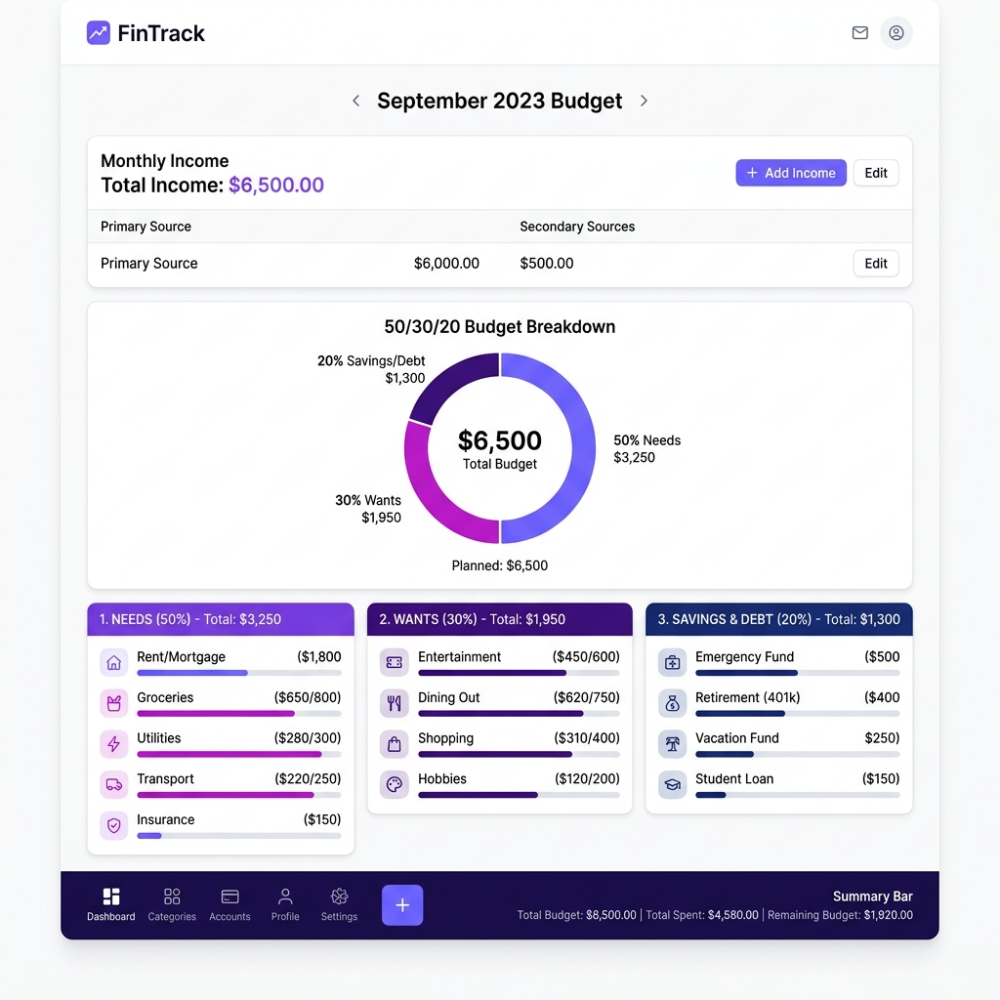

For most people, the word "budget" triggers feelings of restriction, sacrifice, and endless calculations inside complex spreadsheets. But personal finance does not have to be painful. **A budget is not a set of handcuffs; it is a roadmap that gives you permission to spend money guilt-free** on the things you truly care about.
Without a clear structure, it is easy to look at your bank account at the end of the month and wonder: *where did it all go?* This beginner-friendly guide breaks down the most effective, stress-free personal finance framework, explores the technical math behind robust savings, and explains how to handle shared group expenses cleanly.

Historical Context & The Evolution of Budgeting
To understand the power of modern budgeting, we must look at how our relationship with money has transformed over the decades. Historically, budgeting was a highly tactile, physical endeavor. In the early-to-mid 20th century, households relied heavily on the "Envelope Method"—literally placing physical cash into labeled paper envelopes for groceries, rent, and utilities. Once an envelope was empty, spending in that category ceased until the next payday. This tactile constraint kept consumer debt remarkably low but offered zero flexibility.
The technological shift began in the late 1980s and 1990s with the advent of personal computers and early spreadsheet software like Microsoft Excel. While spreadsheets digitized mathematical calculations, they required tedious manual entry that discouraged the average consumer. The real revolution arrived in the 21st century with mobile banking, automated transaction synchronization, and browser-first web applications.
In 2005, then-Harvard bankruptcy expert Senator Elizabeth Warren popularized the **50/30/20 rule** in her book *All Your Worth: The Ultimate Lifetime Money Plan*. This shifted personal finance from granular, exhausting bookkeeping to a macro-allocation strategy. Today, rather than counting pennies, we allocate entire income streams dynamically using lightweight, browser-based calculators and split-expense tools, balancing modern speed with robust financial security.
The 50/30/20 Budgeting Framework
Popularized by personal finance experts, the **50/30/20 rule** is a simple, percentage-based guideline for allocating your monthly take-home net income. It divides your money into three clear buckets:
1. 50% for "Needs" (Survival Essentials)
Half of your net income should cover your absolute necessities — things you cannot live without. If you lost your job tomorrow, these bills must still be paid to maintain basic survival and shelter:
- Rent, mortgage, or housing maintenance costs.
- Core utility bills (electricity, water, basic internet, and mobile phone plans).
- Groceries, basic food items, and essential medicines.
- Minimum credit card, student loan, or auto loan payments (legal obligations).
2. 30% for "Wants" (Lifestyle Choices)
This is your "guilt-free spending money." You are allowed to spend 30% of your earnings on things that enhance your lifestyle but are not survival essentials. In behavioral economics, keeping this bucket healthy prevents "frugality fatigue" and prevents budget burnout:
- Dining out, specialty coffee, and social drinks with friends.
- Entertainment subscriptions (Netflix, Spotify, gym memberships).
- Shopping for clothes, hobbies, and the latest gadgets.
- Travel, weekend trips, and vacation funds.
3. 20% for "Savings & Debt" (Future Wealth)
At least one-fifth of your money should be immediately set aside to build financial security and invest in your future. This is the engine of your long-term wealth:
- Building a **3-to-6 month Emergency Fund** (kept in a separate high-yield savings account).
- Retirement investments (EPF, PPF, low-cost index funds, mutual funds, 401k).
- Aggressive principal repayments on high-interest debt (paying extra on top of your minimums).
Deep-Dive Technical & Scientific Budgeting Analysis
Zero-Based Budgeting (ZBB): Proactive Dollar Allocation
While the 50/30/20 rule provides an excellent top-down macro framework, detail-oriented planners often combine it with **Zero-Based Budgeting (ZBB)**. Popularized by modern financial coaches, ZBB operates on a simple mathematical formula:
Under this system, every single dollar of your net monthly income is assigned a specific job before the month begins. If your monthly take-home pay is $4,000, you must map out where every single one of those $4,000 will go—whether it goes to rent, groceries, mutual funds, or movie tickets. If you finish your budget allocations and have $300 left unassigned, your job isn't done. You must proactively direct that $300 into a specific category, such as your emergency reserve or a future travel fund. This method eliminates the "leaky bucket" phenomenon, where unallocated money in checking accounts is mindlessly spent on impulsive retail purchases.
The Science of High-Yield Emergency Reserves
An emergency reserve is the ultimate psychological and financial shock absorber. Behavioral science shows that a lack of liquid savings is the primary driver of high-interest debt cycles. When an unexpected expense arises—such as a medical emergency or a car repair—individuals without liquid reserves are forced to rely on high-interest credit cards or personal loans, locking themselves into debt cycles.
The Battle Against Inflation: Historically, consumers parked their emergency funds in traditional brick-and-mortar savings accounts. However, these accounts often yield a negligible interest rate (e.g., 0.01% to 0.05% APY). When inflation hovers around 3% to 6%, money sitting in a traditional account actively loses purchasing power every day. To combat this, modern savers utilize **High-Yield Savings Accounts (HYSAs)** or highly liquid money-market mutual funds. These vehicles often yield interest rates that are 10x to 100x higher than traditional accounts while maintaining absolute, same-day liquidity.
Calculating the 3-to-6 Month Target: Your emergency fund should not be based on your gross income, but on your absolute essential expenses (the 50% "Needs" bucket). For instance, if your core survival expenses are $2,500 per month, your emergency fund target should be:
- 3-Month Baseline (Minimal Risk Profile): $7,500
- 6-Month Secure (High Risk / Freelancers): $15,000
Managing Highly Variable Freelancer Incomes
For freelancers, independent contractors, and small business owners, traditional budgeting rules can feel impossible because income fluctuates wildly. One month may bring $8,000 (a "hill" month), while the next might yield only $1,500 (a "valley" month).
To survive and thrive under variable cash flows, implement the **"Hill and Valley Buffer System"**:
- Establish an Operating Buffer Account: Open a separate bank account specifically for business receipts. All client invoices and contract payments should be paid into this business account.
- Calculate Your Bare-Minimum Survival Number: Establish the absolute lowest amount of money you need each month to cover your personal "Needs" (housing, food, minimum debt). Let's say this is $2,000.
- Pay Yourself a Predictable Personal Salary: Each month, transfer a fixed "salary" (e.g., $2,500) from your business buffer account to your personal checking account.
- The Buffer Shock Absorber: During "hill" months when you make $8,000, do not increase your personal spending. Leave the surplus inside the business buffer account. When a "valley" month arrives and you only earn $1,500, use the accumulated surplus in your buffer account to pay yourself your full $2,500 salary. This mathematical approach smooths out your income and reduces financial anxiety.
Comparative Budgeting Methodologies
No single budgeting method works for everyone. Choosing the right style depends entirely on your personality, detail orientation, and financial goals. Use the comparative matrix below to identify your optimal system:
| Budgeting Method | Ideal For | Core Strength | Major Drawback | Recommended Tools |
|---|---|---|---|---|
| 50/30/20 Rule | Beginners & Hands-off managers | Simple macro tracking, low stress | Too broad for deep spending leaks | Spreadsheets / FairShare |
| Zero-Based (ZBB) | Detail-oriented planners | Absolute control over every dollar | Time-consuming, high maintenance | YNAB / Custom Sheets |
| Envelope System | Impulsive physical spenders | Tactile limits stop overspending | Inconvenient for online payments | Physical Cash Envelopes |
| Reverse Budgeting | Busy wealth accumulators | Guarantees savings targets first | Easy to overspend remaining cash | Automated Bank Sweeps |
Step-by-Step Practical Setup Checklist
Ready to build your budget? Follow this highly structured, step-by-step implementation guide to establish your framework in under an hour:
Calculate Net Monthly Income
Determine your absolute take-home pay. This is your salary after income tax, payroll taxes, social security, and health insurance premiums are deducted. If you are a freelancer, use your average lowest monthly income.
Audit the Last 90 Days of Expenses
Log into your online banking accounts and pull your statements for the last three months. Sort your expenses into categories to understand your realistic spending baselines and identify hidden leaks.
Cap Your "Needs" Category at 50%
Sum up your housing, utilities, groceries, transportation, and minimum debt payments. If this total exceeds 50% of your take-home pay, look for immediate cuts (e.g., renegotiate internet bills, switch to cheaper supermarkets, or downsize housing arrangements).
Automate Your "Savings & Debt" Sweeps (20%)
Set up automatic bank transfers to occur the morning after you receive your paycheck. Direct 20% of your net income straight into your separate High-Yield Emergency Reserve or investment broker account to ensure you "pay yourself first."
Track and Splurge Your "Wants" (30%)
Keep the remaining 30% in your checking account or transfer it to a designated card for daily lifestyle spending. This is your guilt-free spending money. Use it on entertainment, dining out, and travel with zero regret.
How to Handle Shared Expenses Cleanly
One of the biggest leaks in a monthly budget is **untracked shared expenses**. When you buy groceries for your roommates, split dinner with a partner, or pay for a group trip, keeping track of "who owes whom" in your head leads to mathematical errors and social awkwardness.
Implement these simple strategies to protect your relationships and your budget:
- Establish Splitting Rules Early: Before booking a group trip or signing a lease, agree on how expenses will be split (equal shares vs. proportional to consumption).
- Track Real-Time: Never wait until the end of a two-week trip to try and compile crumpled paper receipts. Log transactions the exact second they happen.
- Use Browser-First Tools: Avoid complex financial apps that require all your friends to create accounts and input personal details. Use simple, lightweight browser tools that let you input names, log expenses, and see exact settlements instantly.
Split Group Expenses Safely — Free
Use our browser-based FairShare Splitter to log group costs, split bills equally or proportionally, and calculate exactly who needs to pay whom. Works instantly in your browser with no signup required.
Open FairShare Splitter →Frequently Asked Questions (FAQ)
Q1: What should I do if my essential "Needs" exceed 50% of my income?
In high-cost-of-living urban areas, it is extremely common for housing and utilities alone to swallow 40-50% of income. If your Needs exceed the threshold, do not panic. Modify your allocation percentages temporarily to a 60/20/20 or 70/15/15 split. Treat this as a temporary phase. Actively work to reduce fixed costs by taking on a roommate, refinancing debt, or downsizing housing. Alternatively, focus on increasing your primary income stream or establishing side-hustles to bridge the gap.
Q2: Is minimum debt repayment considered a "Need" or a "Savings & Debt" allocation?
Minimum debt payments (such as the minimum monthly payment due on a credit card, auto loan, or student loan) are legally binding obligations. Failing to pay them will severely damage your credit score and incur legal fees. Therefore, minimum debt payments are categorized under "Needs." Any additional payments you make to aggressively pay down the principal balances of your debts faster fall under the 20% Savings & Debt allocation bucket.
Q3: How do I handle unexpected windfalls, bonuses, or tax refunds in my budget?
To make the most of lump-sum cash inflows without spending them impulsively, implement the financial "Rule of Thirds":
- One-Third to the Past: Pay down high-interest debt or boost your emergency fund to build safety nets.
- One-Third to the Future: Allocate to long-term retirement accounts or long-term financial goals.
- One-Third to the Present: Treat yourself! Spend this portion guilt-free on fun wants, travel, or shopping.
Q4: How often should I review or adjust my budget allocations?
You should do a brief monthly review (approx. 10 to 15 minutes) to ensure you stayed within your budget limits and to plan for the upcoming month's unique expenses (like annual car insurance premiums or holiday gifts). Additionally, perform a major budget audit whenever a significant life event occurs, such as receiving a raise, moving to a new apartment, getting married, or experiencing a career transition.
Q5: How do shared expenses with roommates or a partner fit into individual 50/30/20 allocations?
When splitting costs, your personal budget should only record your net share of the expense. For example, if the monthly rent is $1,600 and you split it 50/50 with a roommate, your budget should show a Need of $800, not $1,600. To prevent uncalculated group debts from distorting your actual cash flow, always log transactions immediately using a lightweight browser utility like FairShare, settling up balances regularly to keep your personal records highly accurate.
Standard Operating Procedure (SOP): Monthly Budget Reconciliation
To build automated wealth, you must follow a strict Standard Operating Procedure (SOP) to reconcile your finances at the end of every month (preferably on the last weekend of the month):
- ☐ 1. Income Reconciliation Audit: Check your bank deposits and verify that all monthly revenue streams (net salary, freelance fees, side-hustle sales) are logged.
- ☐ 2. Expenses Allocation Sweep: Sort your monthly transaction statements. Verify that Needs occupied under 50%, and Wants occupied under 30% of your total net income.
- ☐ 3. Emergency Fund Safety Balance: Ensure your emergency fund holds a minimum of 3 to 6 months of living expenses, and deposit any surplus cash into your high-yield savings account.
- ☐ 4. Automated Investment Routing: Confirm that your 20% savings bucket was successfully routed to your diversified index fund using automated bank transfer protocols.
- ☐ 5. Wealth Projection Compound Check: Log your total net worth in your local tracking sheet, verify that your compounding rate is on track, and plan next month's spending limits.
Advanced Investment Theory: Dollar-Cost Averaging & Asset Allocation
To optimize your budget's savings bucket, you must implement structured investment frameworks. The most famous methodology is Dollar-Cost Averaging (DCA)—an investment strategy where you buy a fixed dollar amount of an asset (such as a diversified stock index fund) on a regular schedule, regardless of its price. When prices are high, your fixed contribution buys fewer shares; when prices crash, it automatically buys more shares.
This mathematical framework removes emotional timing errors and lowers your **Average Cost Per Share** over long timeframes. Additionally, establishing a clear **Asset Allocation** based on your age and risk tolerance (e.g., a standard 80/20 stock-to-bond ratio for young professionals) coordinates your investments dynamically, ensuring that your savings compound with maximum structural efficiency, turning your monthly budget into an automated wealth-building machine.
Case Studies: Budgeting Failure and Compounding Success
Case Study 1: The Single Earner who Built a 5,00,000 Rupee Emergency Fund in 2 Years
The Scenario: A mid-career professional earning 60,000 rupees net per month had zero savings, living paycheck-to-paycheck. Every month, they promised to save "whatever money was left over," but ended up spending it on dining out and electronics, feeling constant financial anxiety.
The Failure: When their car's transmission failed unexpectedly, requiring 35,000 rupees in urgent repairs, they had no cash reserves. Forced to put the cost on a high-interest credit card, they fell into a revolving debt trap, paying 3,000 rupees a month in interest fees, which severely crippled their monthly budget and escalated their anxiety.
The Correction: The professional adopted the **50/30/20 budgeting rule** and automated their finances. They set up their bank account to automatically route 20% (12,000 rupees) of their salary to a high-yield savings account the moment they were paid ("Pay Yourself First"). Within 24 months, they built a 2,88,000 rupee emergency fund, cleared their credit card debt, and completely eliminated their financial stress, proving that automation is the cornerstone of budget success.
Quantitative Analysis: Simple vs. Compound Interest
To fully appreciate the mathematical velocity of automated savings, a budgeter must understand the physical difference between simple and compound interest. Simple interest is calculated strictly on the initial principal contribution, resulting in flat, linear growth. Compound interest is calculated on the initial principal plus all accumulated interest from previous periods, resulting in exponential, logarithmic wealth accumulation.
The Mathematical Formulations of Wealth Accumulation
The mathematical models governing these two financial structures demonstrate the massive gulf in long-term performance. The future value $A$ under simple interest is calculated using the linear formula:
Where $P$ is the initial principal, $r$ is the annual interest rate, and $t$ is the elapsed time in years. In contrast, the future value $A$ under compound interest, where interest is compounded $n$ times per year, is governed by the exponential formula:
As the compounding frequency $n$ approaches infinity, the growth model transitions into **Continuous Compounding**, which represents the absolute limit of exponential expansion, governed by Euler's constant $e$:
In continuous compounding, every micro-rupee of interest immediately begins earning interest of its own. In terms of your monthly budget, this means that even small, consistent allocations placed in high-yield compounding vehicles will radically outperform static savings accounts over a 10 to 30-year horizon, illustrating why compounding is often described as the eighth wonder of the world.
Comparative Ledger: Linear vs. Exponential Growth
The table below tracks and compares the future value of a ₹10,000 monthly budget allocation compounding at an 8% annual return over 10, 20, and 30 years, demonstrating the massive cost of delaying your budgeting routine:
| Timeframe (Years) | Total Principal Invested (₹) | Simple Growth (8% Linear) (₹) | Compound Growth (8% Monthly) (₹) | The Compounding Bonus (₹) |
|---|---|---|---|---|
| 10 Years | ₹12,00,000 | ₹16,80,000 | ₹18,29,460 | +₹1,49,460 |
| 20 Years | ₹24,00,000 | ₹43,20,000 | ₹58,90,204 | +₹15,70,204 |
| 30 Years | ₹36,00,000 | ₹79,20,000 | ₹1,49,03,594 | +₹69,83,594 |
This quantitative model reveals a striking truth: between years 20 and 30, while your principal investment only increases by ₹12,00,000, your compound future value grows by over **₹90,13,390**! This is the power of exponential curves—the gains in the final decade dwarf the combined input of the first two decades, highlighting why starting early is the single most important factor in personal wealth safety.
Strategic Industry Forecast: AI-Driven Personal Finance & Automated Asset Routing
Looking ahead at the future of personal wealth management, the manual spreadsheet calculation of household budgets is evolving into a fully automated, algorithmic system. The traditional monthly budgeting routine is being replaced by **AI-Driven Personal Financial Coordinators**. These intelligent local assistants run in the background of your secure browser or mobile device, analyzing your spending habits, identifying unnecessary leaks, and dynamically adjusting your budget categories in real time.
Furthermore, the integration of **automated programmable banking APIs** allows your budget to route assets dynamically. Instead of manually moving cash at the end of the month, the AI coordinator calculates your net savings rate daily and automatically splits the surplus: routing 10% to index funds, 5% to cryptocurrency assets, and 5% to high-yield cash reserves based on real-time market valuations and tax-loss harvesting algorithms. By establishing a strict **50/30/20 structural framework** today, you build the logical foundation that these future AI coordinators require to operate efficiently, ensuring that your personal wealth compounds automatically with zero manual friction, making financial security and long-term independence accessible to everyone.
The Mathematics of Financial Wealth & Savings Compounding
To build long-term financial security, a budgeter must understand the underlying physics of compound interest. A budget is not merely a tool to restrict spending; it is a quantitative engine designed to maximize your **Savings Rate (S)**, which is the single most critical driver of long-term wealth. The mathematical formula governing the future value of a regular monthly investment (PMT) compounding monthly at a rate of r over n periods is derived as:
By optimizing your budget using the **50/30/20 Rule** (allocating 50% to Needs, 30% to Wants, and 20% strictly to Savings), you guarantee a consistent monthly investment. A modest savings rate of 20% compounding at a standard 7% annual index fund return over 30 years will translate a modest monthly salary into a massive retirement nest egg, proving that consistent, disciplined cash flow allocation is infinitely more powerful than trying to time the financial markets.
Exhaustive Monthly Budgeting FAQs
Q1: How does a high personal savings rate accelerate your path to financial independence mathematically?
Your path to financial independence is determined entirely by your **Savings Rate** (the percentage of your net income you save and invest). The higher your savings rate, the faster you build assets while simultaneously keeping your annual living expenses low. For example, a person with a 10% savings rate must work for 9 years to save enough to cover 1 year of living expenses. A person with a 50% savings rate saves enough to cover 1 year of living expenses for every single year they work, compressing their time-to-retirement from 40 years down to 17 years, proving that living below your means is the fastest driver of wealth compounding.
Q2: Why is the 50/30/20 Rule an exceptionally robust structural framework for beginners?
The 50/30/20 Rule (popularized by Senator Elizabeth Warren) is highly robust because it simplifies cash flow management without requiring tedious line-item tracking. It divides net income into three massive buckets: **Needs (50%)** (rent, utilities, groceries, basic transport); **Wants (30%)** (dining out, entertainment, travel); and **Savings (20%)** (debt paydown, emergency funds, index investments). This framework prevents "lifestyle creep" (where your spending automatically expands to match your raises) by ensuring that as your income grows, your savings allocation automatically compounds in absolute terms.
Q3: What are the cognitive biases that drive emotional spending, and how can they be managed?
Human beings operate under cognitive biases that actively sabotage financial discipline. The primary driver is **Hedonic Adaptation** (or the hedonic treadmill), where we rapidly adapt to new purchases, returning to a baseline level of happiness and prompting us to buy more to replicate the high. Other biases include **Social Proof** (spending to keep up with the lifestyle of peers) and **Present Bias** (valuing immediate small rewards over massive long-term security). Understanding these allows you to implement behavioral strategies, like the **24-Hour Rule** (waiting 24 hours before making any non-essential purchase) to clear emotional impulses.
Q4: Why is client-side local budgeting highly secure compared to linking bank APIs?
Linking your physical bank accounts to third-party budgeting apps via APIs exposes your bank credentials, login tokens, physical transaction locations, and complete financial profile to database hacks, security leaks, and targeted financial profiling. A client-side budgeting tool stores all your entered balances, expenses, and asset targets strictly inside your local browser memory sandbox. Your sensitive financial footprint is kept 100% private, secure, and protected from third-party tracking.
Q5: How does the "Emergency Fund" insulate a household against predatory debt cycles?
An emergency fund is a volatile cash reserve (typically 3 to 6 months of absolute living expenses) kept strictly liquid. Without an emergency fund, unexpected life events (such as job loss, medical emergencies, or car failures) force households to utilize high-interest credit card debt or predatory payday loans. Once trapped in a high-interest debt cycle (often carrying interest rates above 20% to 30%), the interest payments devour your cash flow, making future savings impossible. The emergency fund acts as a financial shock absorber, neutralizing debt threats.
Q6: What is the "zero-based budgeting" methodology, and how does it optimize allocation?
Zero-based budgeting is a framework where **every single dollar of your monthly net income is assigned a specific job** before the month begins. The goal is to ensure your income minus your expenses/savings equals exactly zero: Income - Expenses - Savings = 0. By assigning a destination for every dollar (e.g., directing residual funds to an investment index or a specific holiday budget), you eliminate passive spending leakages where unallocated money is spent on unconscious, low-value wants, maximizing cash flow efficiency.
Q7: How do compound interest calculations illustrate the high cost of waiting to save?
The time value of money means that waiting to save is incredibly expensive. Suppose Person A starts investing $200 a month at age 20, compounding at 8% annually. By age 30, they stop investing and let the balance compound untouched. Person B waits until age 30 and invests $200 a month for the next 35 years until age 65. Even though Person B invested for 3.5 times longer, **Person A ends up with a significantly larger retirement balance** because their initial capital had an extra 10 years of early compounding, proving that early savings discipline is a multiplier of wealth.
Q8: How do I manage volatile or irregular income (like freelance or sales commissions) inside a budget?
Managing irregular income requires a **"Hill-and-Valley" fund strategy**. First, establish your absolute baseline cost of survival (rent, food, base transport). During high-income months (the hills), you deposit all excess revenue into a dedicated, secondary savings account (the valley fund). During low-income months (the valleys), you draw from this valley fund to cover your baseline expenses, maintaining a steady, stress-free personal lifestyle budget regardless of volatile monthly sales fluctuations.